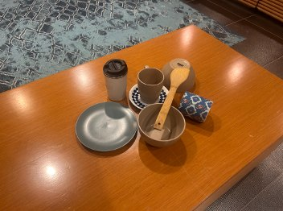
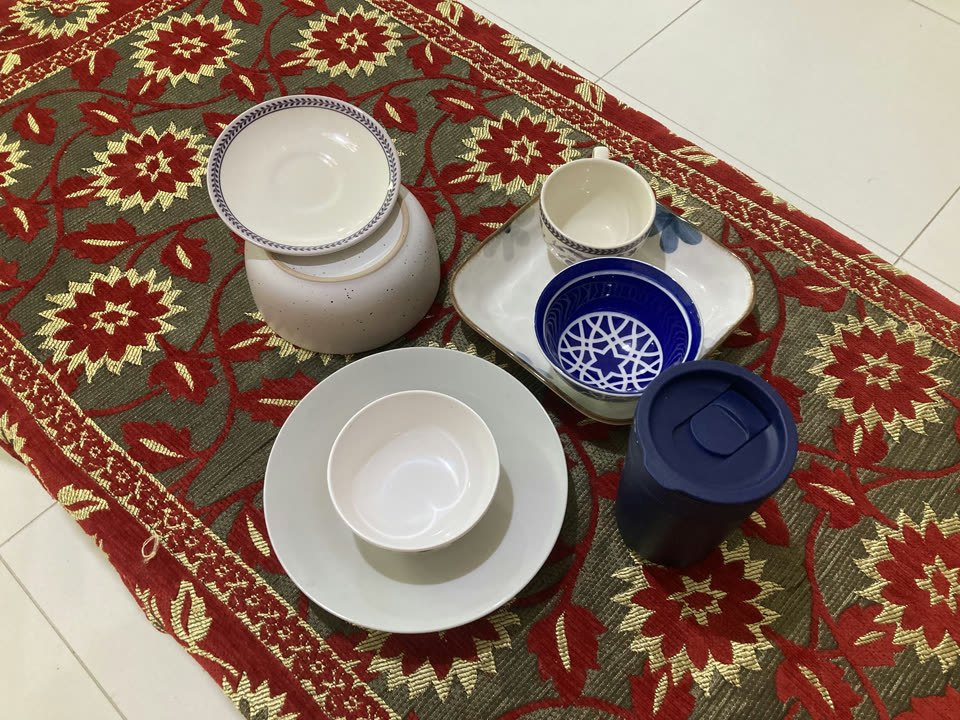
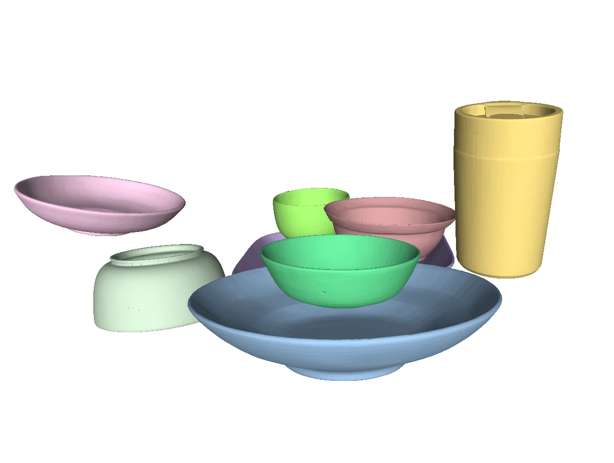
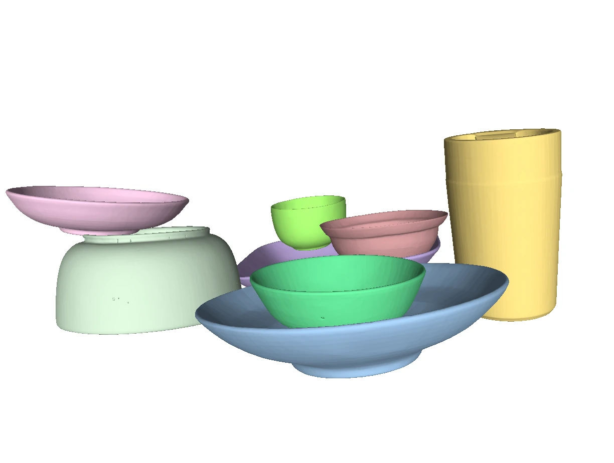

Abstract
Monocular 3D scene reconstruction has recently seen significant progress. Powered by modern neural architectures and large-scale data, recent methods achieve high performance in depth estimation from a single image. Meanwhile, reconstructing and decomposing common scenes into individual 3D objects remains a hard challenge due to the large variety of objects, frequent occlusions and complex object relations. Notably, beyond shape and pose estimation of individual objects, applications in robotics and animation require physically-plausible scene reconstruction where objects obey physical principles of non-penetration and realistic contacts.
In this work we advance object-level scene reconstruction along two directions. First, we introduce MessyKitchens, a new dataset with real-world scenes featuring cluttered environments and providing high-fidelity object-level ground truth in terms of 3D object shapes, poses and accurate object contacts. Second, we build on the recent SAM 3D approach for single-object reconstruction and extend it with Multi-Object Decoder (MOD) for joint object-level scene reconstruction. To validate our contributions, we demonstrate MessyKitchens to significantly improve previous datasets in registration accuracy and inter-object penetration. We also compare our multi-object reconstruction approach on three datasets and demonstrate consistent and significant improvements of MOD over the state of the art.
Dataset
MessyKitchens contains cluttered kitchen scenes with rich contacts, stacking, and nesting patterns. Pick a scene to see the real photo, its 3D annotation, and the scene in interactive 3D.

Drag to rotate · Scroll to zoom · Right-drag to pan
MOD vs SAM 3D
SAM 3D reconstructs objects one at a time. MOD extends it with a Multi-Object Decoder that reconstructs all objects in the scene jointly. Drag the slider to compare the two.



Citation
If you find MessyKitchens useful in your research, please consider citing:
@article{ansari2026messykitchens,
title = {{MessyKitchens}: Contact-rich Object-level {3D} Scene Reconstruction},
author = {Ansari, Junaid Ahmed and Ding, Ran and Pizzati, Fabio and Laptev, Ivan},
journal = {arXiv preprint arXiv:2603.16868},
year = {2026}
}